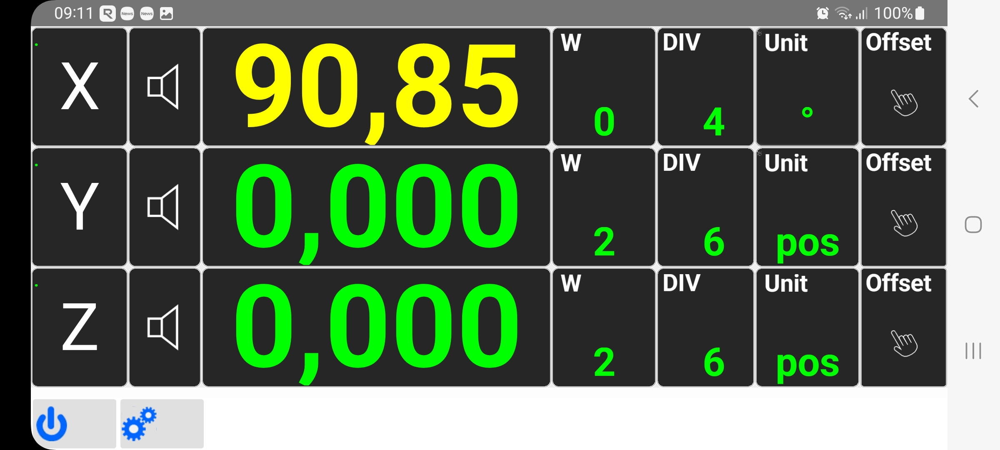
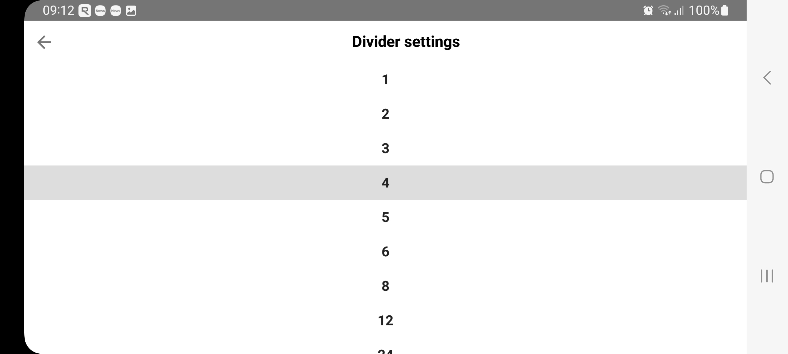
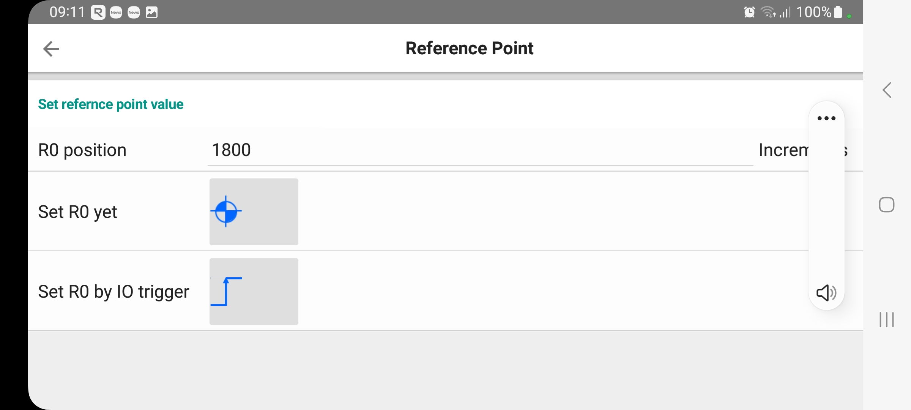
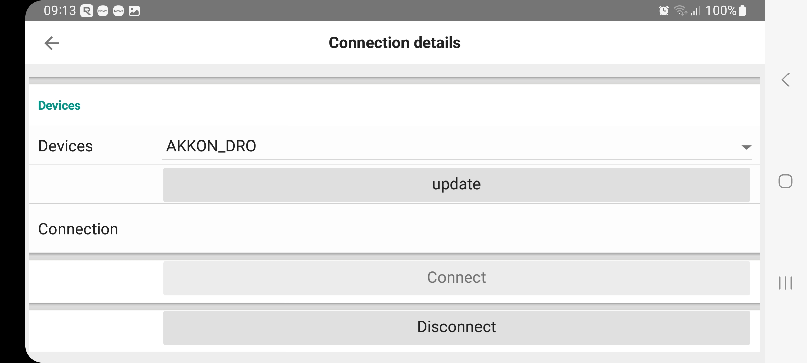
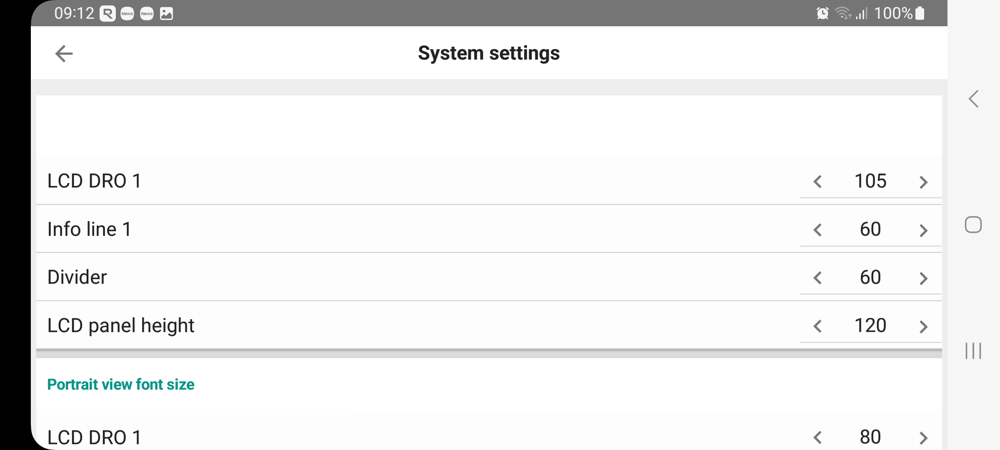

Digital indexer - Android Application: AKKON DRO
The AKKON DRO application serves as the primary user interface for the Digital Indexer system. It visualizes high-resolution encoder data received via Bluetooth and provides advanced tools for machining operations on lathes.
Main Interface and Visualization
The application supports both landscape and portrait orientations to fit various mounting setups on the machine tool.
Multi-Axis Display: Visualizes the position for X, Y, and Z axes.
- Color-Coded Guidance: The angular display changes color based on the proximity to the target position:
Green: Target position reached (within tolerance).
Yellow: Minor angular deviation.
Red: Significant deviation from the target.
Unit Toggling: Users can switch between angular degrees (°) and decimal position modes.
{kind=link}

Figure 34: Display digital read out on Android phone
Tip
A simple tap on the main LCD value resets (zeros) the current angular position.
Targeting and Divider Function
To facilitate tasks such as creating four equally spaced bore holes on a workpiece circumference, the app includes a sophisticated Divider tool.
{kind=link}

Figure 35: Set divider for selected encoder
Divider Selection: Users can select the number of divisions (e.g., 4, 6, 8, 12) via a dedicated selection menu.
- Acoustic Feedback: When the speaker icon is active, the app provides variable-frequency beeps:
The beep frequency increases as the spindle nears the target.
Different frequencies distinguish between positive and negative deviations, allowing for “blind” adjustment without looking at the screen.
Coordinate Systems and Offsets
For complex setups, the software supports multiple reference systems:
Workpiece Zero Points: Multiple zero points (W0, W1, W2, etc.) can be defined, named, and saved with specific offsets.
Angular Offsets: Users can manually input an offset value to compensate for tool alignment or specific drawing requirements.
Reference Point Triggering: An external hardware sensor can be used to trigger a hardware-accurate reference point (R0), ensuring repeatable precision across sessions.
{kind=link}

Figure 36: Set reference point of indexer
System Management and Communication
The app acts as a bridge to the BlackPill hardware for maintenance and configuration:
Bluetooth Connection: Dedicated communication menu to search, connect, and disconnect from the AKKON_DRO hardware.
- Firmware Management:
Request current firmware version information.
Switch the controller into Firmware Update Mode (Bootloader).
Perform over-the-air (OTA) style updates via the communication interface.
{kind=link}

Figure 37: Connect/disconnect app from BlackPill hardware
Settings and Customization
The system settings allow fine-tuning of the UI to ensure maximum readability in the workshop:
Layout Scaling: Adjust font sizes for LCD values, info lines, and dividers.
Panel Height: Customize the size of the LCD panels for better visibility from a distance.
{kind=link}

Figure 38: Change display size settings
Note
This software is designed to work in conjunction with the BlackPill I/O Carrier. Compliance with safety regulations during machine operation is the responsibility of the operator.